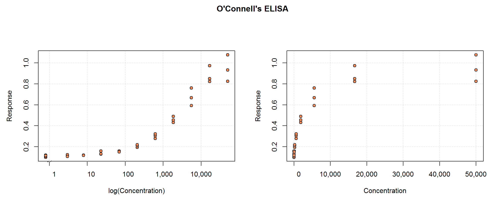
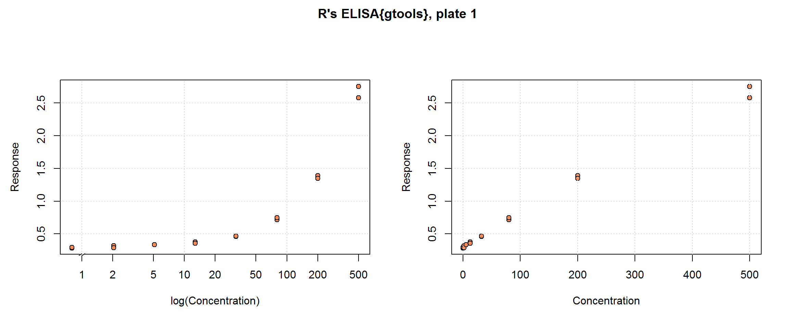
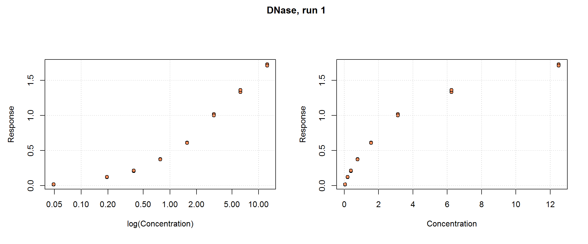
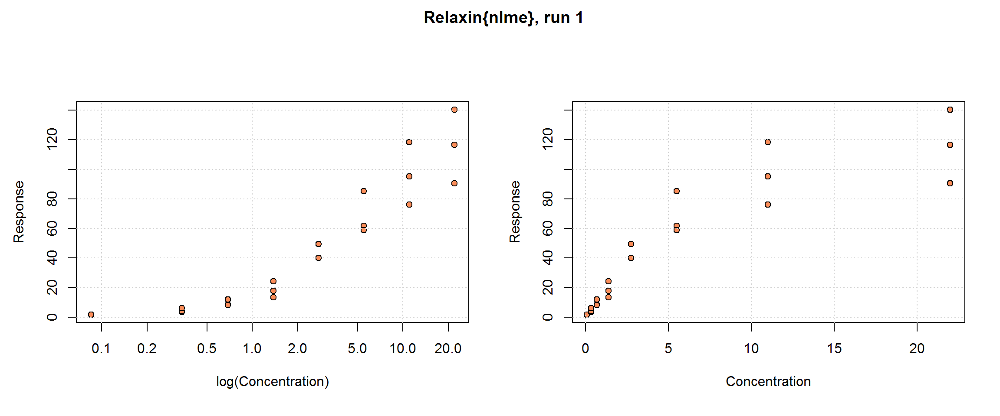
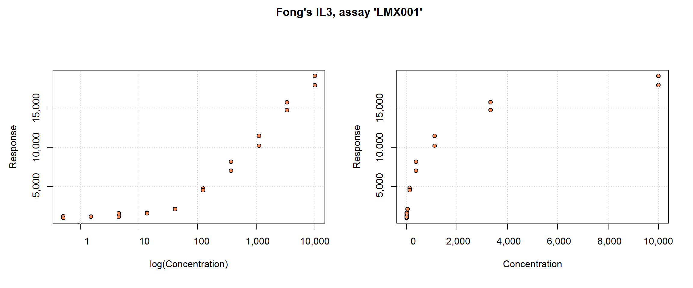

Scientists have made immunoassay data sets available to the public, which helps us practice with realistic data. The data sets described here have often been used to illustrate concepts in the literature cited on this website.
O’Connell, Belanger and Haaland (1993) include this ELISA data set in their article, “Calibration and assay development using the four-parameter logistic model”. This single run includes 10 non-zero concentration standard samples in triplicate plus 2 blanks (also in triplicate). (We are not given any details about the analyte, however.)

The ELISA{gtools} provided with the R package, ‘gtools’, are:
“Observed signals and (for some observations) nominal concentrations for samples that were aliquoted to multiple assay plates, which were read multiple times on multiple days.”
Specifically, 4 plate-based assays (over 2 days) each include 7 standard concentrations (Concentration) plus 7 quality control (QC) samples at intermediate concentrations, in duplicate. The six patient samples per plate, also in duplicate, are less useful, however, since no ‘right answer’ is given; they will be dropped. The response, Signal, is optical density and it was read 3 times for each sample. To get a single response for each sample, we will average the Signal by plate and replicate; therefore, the original number of rows, 504, becomes 168 rows of independent samples in our examples. Hence, once signal triplicates are averaged and patient samples are dropped, the sample size by plate is 30—16 standard samples for curve-fitting and 14 QC samples for cross-validation.

This data set, minus the QC samples, represents a typical immunoassay data collection. We will contrast this design that with the O’Connell data, which contains standard samples in triplicate. In addition to the benefit of an additional set of replicates, the benefits of including concentrations that clearly approach the upper limit of the test will be demonstrated. Some strengths of this data set are its inclusion of quality control samples at concentrations other than the standards, which we will use for cross-validation, and multiple plates. For basic curve-fitting we will use one plate, but this design permits us to show how all four plates can contribute to the estimation of the Response-Error Relationship.
For more practice, one may also want to analyse these other three immunoassay data sets from R packages:
The DNase data set provided with the basic R distribution is “data obtained during development of an ELISA assay for the recombinant protein DNase in rat serum”. There are 11 runs with 8 concentrations (conc) each, in duplicate, for a total sample size of n=176. The response, density, is optical density and it is already adjusted for the zero-calibrator (i.e. the data set does not include blanks or zero-calibrators). Concentration is in ng/mL. No other variables are provided.
This is also a good example of typical calibration data set. It is used in examples over several R packages and textbooks (see its R documentation), as well as in Zeng and Davidian (1997).

The Relaxin data set provided with the R package, nlme, comes with little additional information, but relaxin, generally, is a family of hormones found in mammals, including humans, and is involved in the reproductive system. The data set has 9 runs (Run) with 8 concentrations (conc), in triplicate except for the lowest concentration which only has a single sample; hence the total sample size is n=198. The response, cyclic AMP (cAMP), is a product of the reaction that can be detected by the signal reader. cAMP appears to be already adjusted for blank. No other variables are included.
These data are used in Belanger et al (1996).
These data provide opportunities to:
further explore the possible benefits of samples collected in triplicate;
compare methods for handling heteroscedasticity because here it is particularly severe.

The dat.QIL3 data set from the nCal package (Fong et al. 2012) includes immunoassay results for interleukin-3: 6 runs of 10 concentrations in duplicate for a total n=120. Response, fi, is fluorescence and it is already adjusted for the mean blank response. In this subset of the original data set, all the samples are standard samples. The concentration is stored in expected_conc—there is no need to calculate it from dilution.
Plate position, well, and microbead count, beadct, may be interesting explanatory variables for additional analyses. The curve’s shape and range are similar to DNase, including the limitation that there is limited information near the upper limit of the test. One has the Fong article for comparison, including its use in a Bayesian analysis.

Note: the above data sets are all plate-based assays. We hope to have an instructional POCT dataset soon.
Belanger, B a, M Davidian, and D M Giltinan. 1996. “The effect of variance function estimation on nonlinear calibration inference in immunoassay data.” Biometrics 52 (1): 158–75. http://www.ncbi.nlm.nih.gov/pubmed/8934590.
Fong, Youyi, Jon Wakefield, S De Rosa, and N Frahm. 2012. “A Robust Bayesian Random Effects Model for Nonlinear Calibration Problems.” Biometrics 68 (December): 1103–12. doi:10.1111/j.1541-0420.2012.01762.x.
O’Connell, M.a., B.a. Belanger, and P.D. Haaland. 1993. “Calibration and assay development using the four-parameter logistic model.” Chemometrics and Intelligent Laboratory Systems 20 (2): 97–114. doi:10.1016/0169-7439(93)80008-6.
Zeng, Q, and M Davidian. 1997. “Testing homogeneity of intra-run variance parameters in immunoassay.” Statistics in Medicine 16 (15): 1765–76. http://www.ncbi.nlm.nih.gov/pubmed/9265699.